Introducing Laindoe Love — The Heart Director. Revealing the invisible.


Meet Lain Doe Love. Tap the heart to peek inside. Her arrow flies down through three targets on its way down.
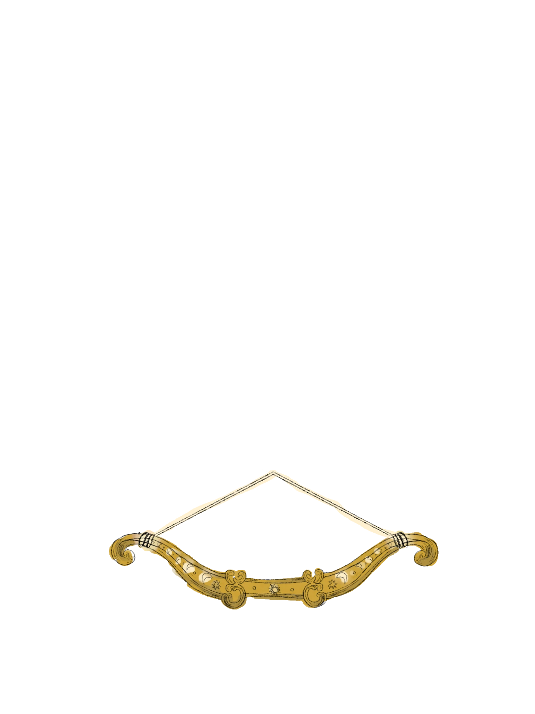
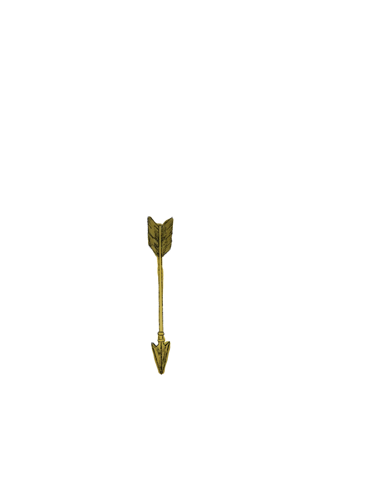
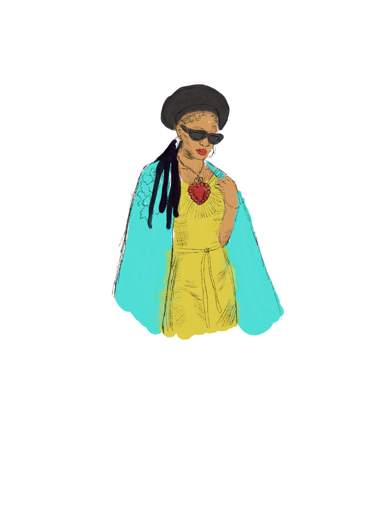
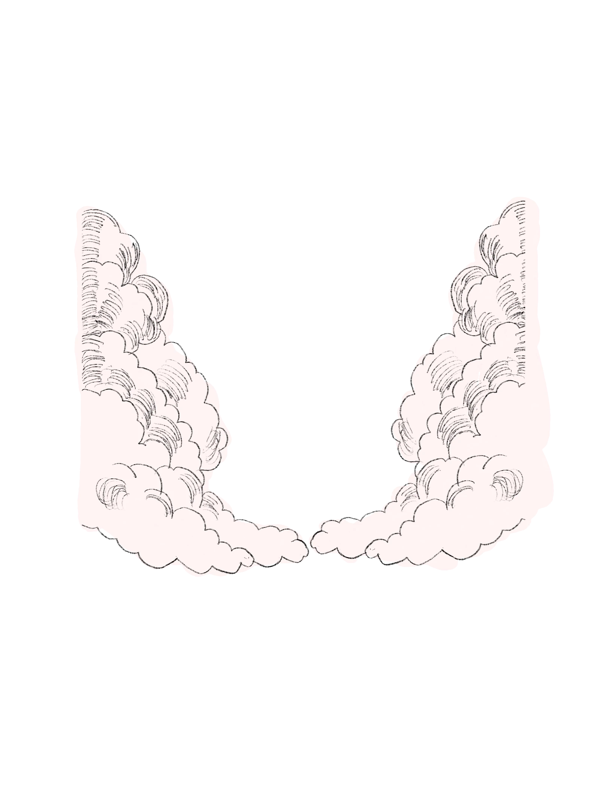
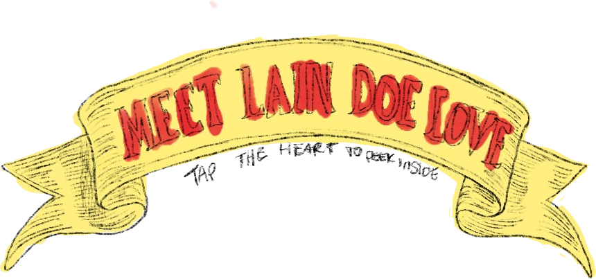
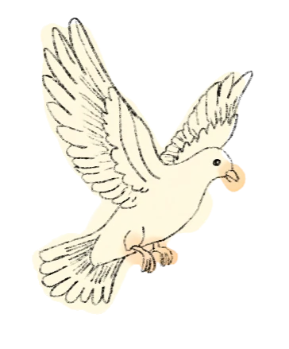
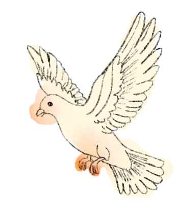
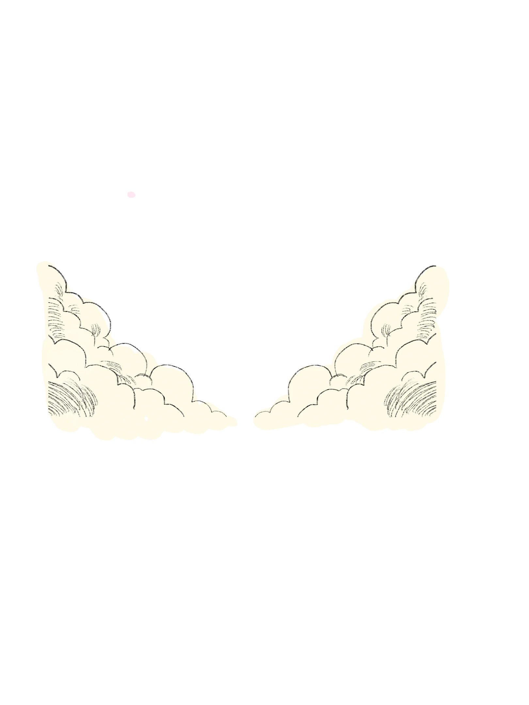
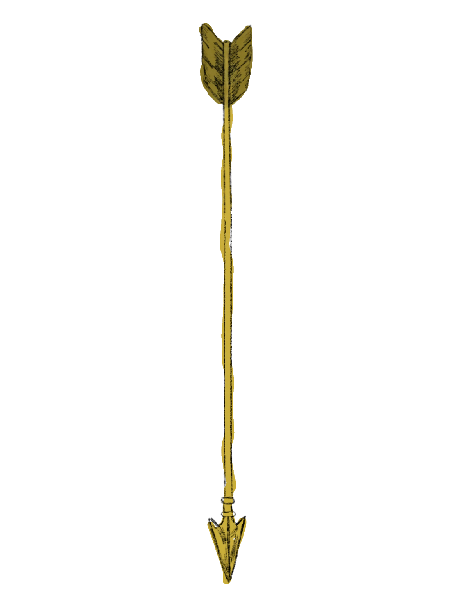
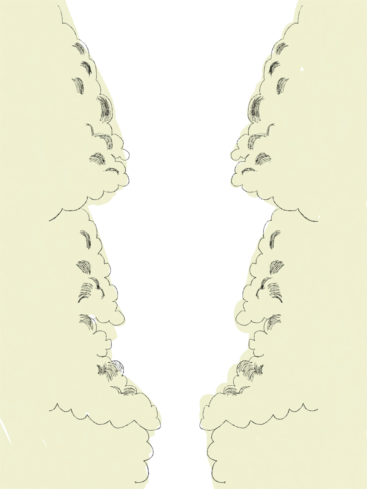
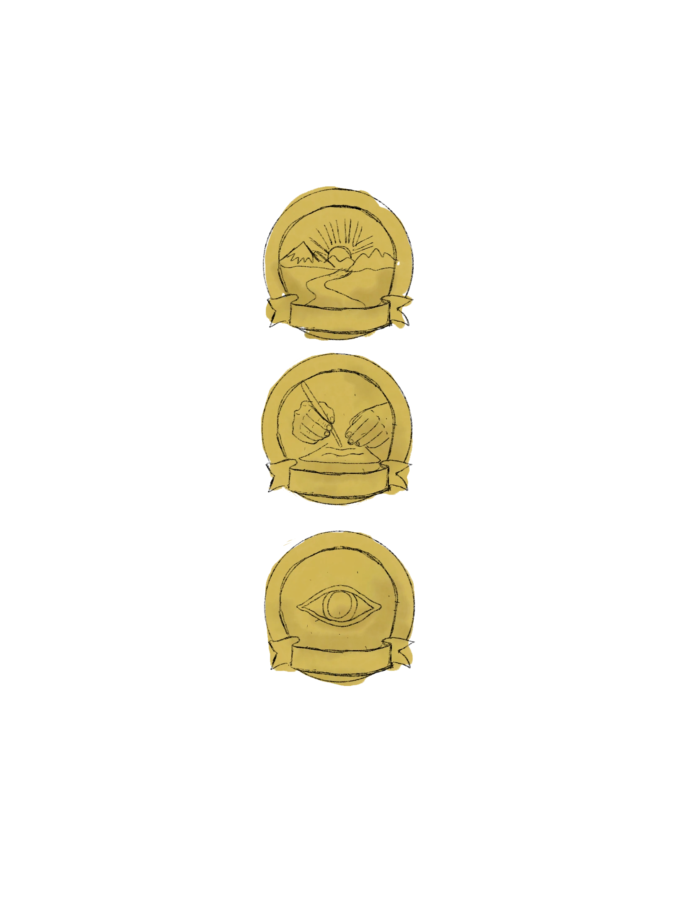
The arrow strikes the heart. Open the quest, or head back to reality.

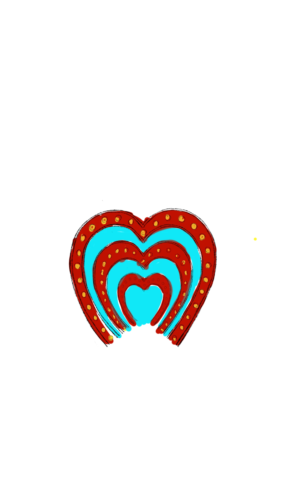
Hear ye, hear ye. By divine declaration we joyfully announce: the gift revealed from following your heart. A creative supply chain building the infrastructure that moves ideas into intellectual property. A system for creators, a platform for culture, a legacy for generations. This is the beginning of Ten Grand.

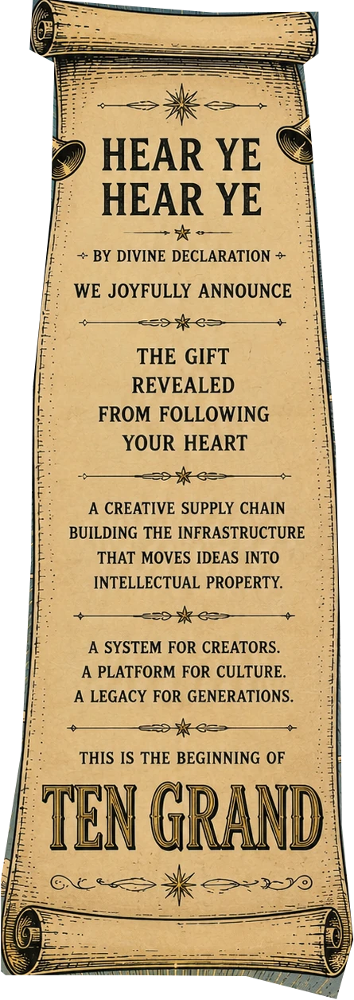
Be my sweetheart: join the Heart Direction newsletter. Read the journal: follow along on Substack. Contact me: send a letter my way. Follow the journey: find me on socials.

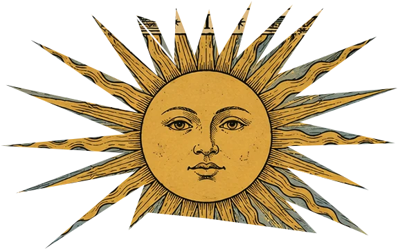
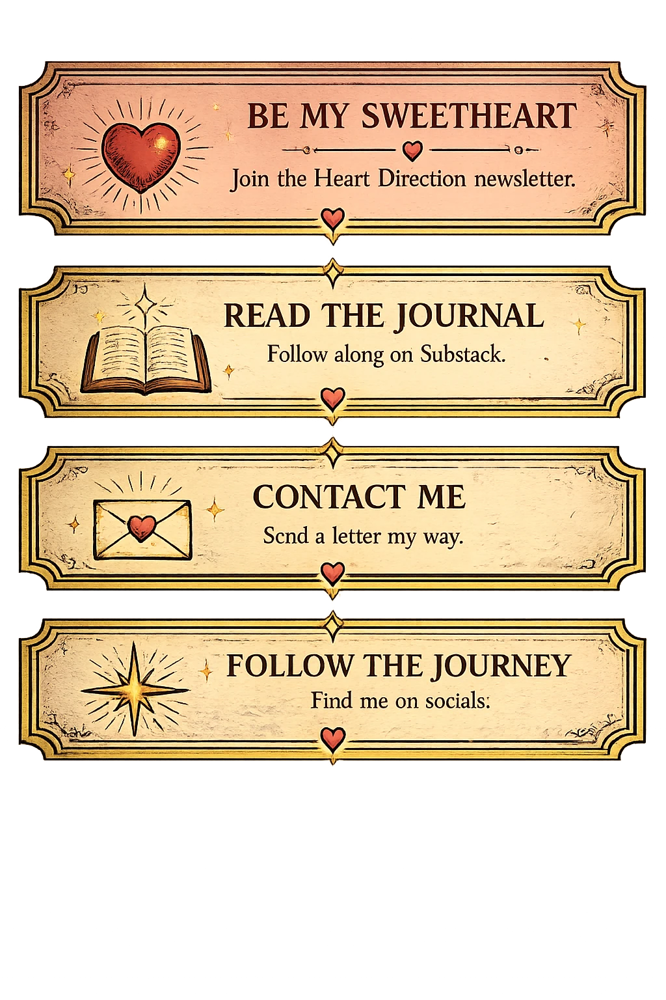
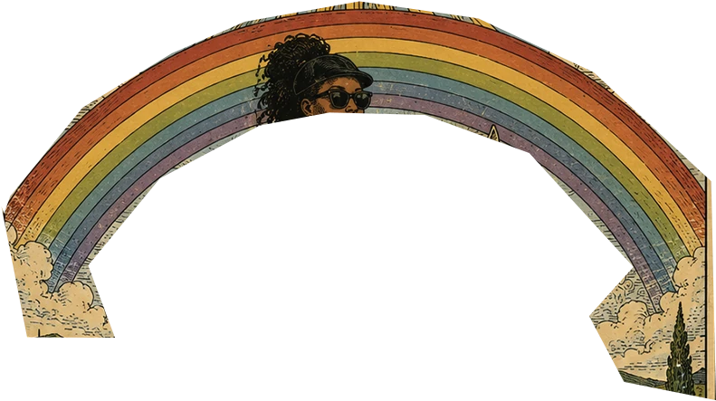
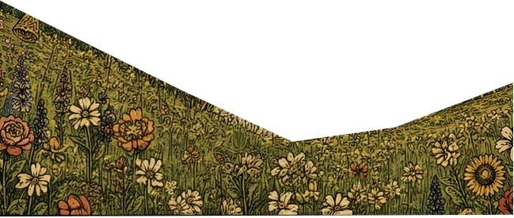
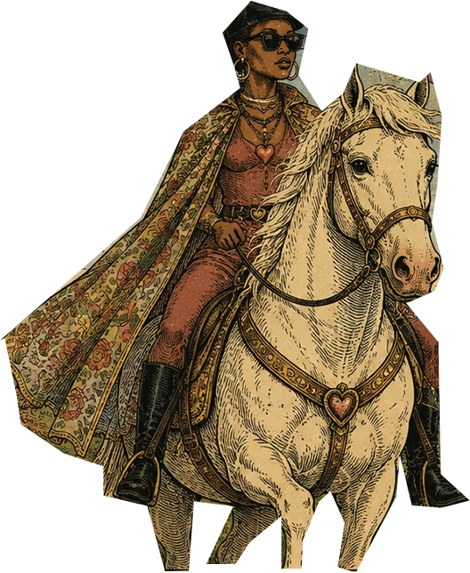